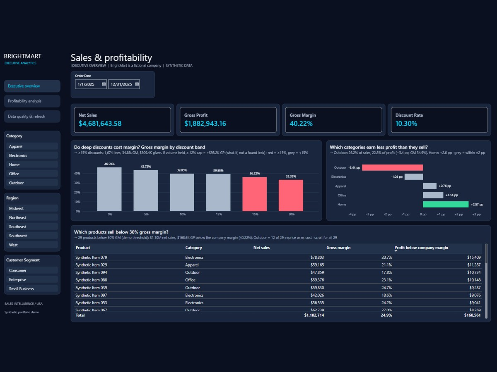
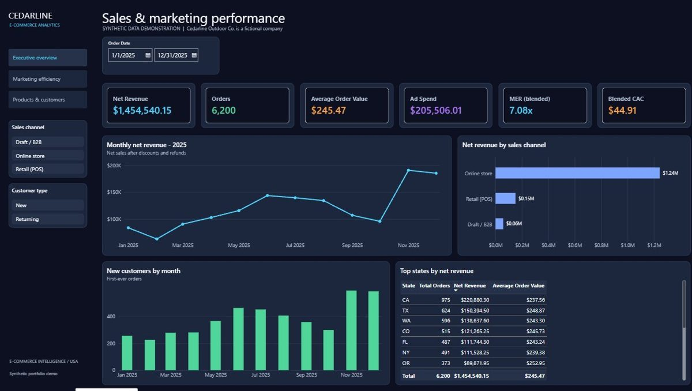
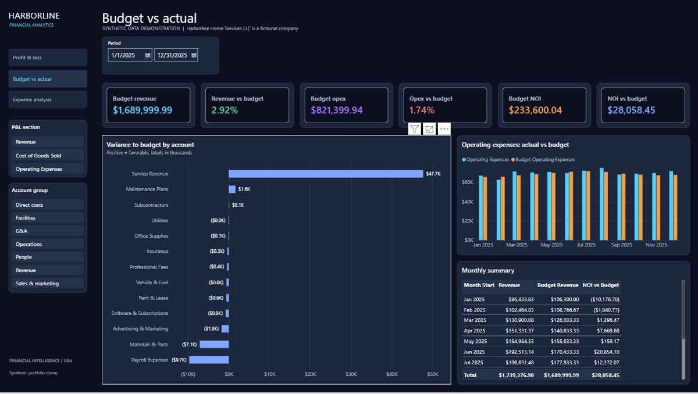
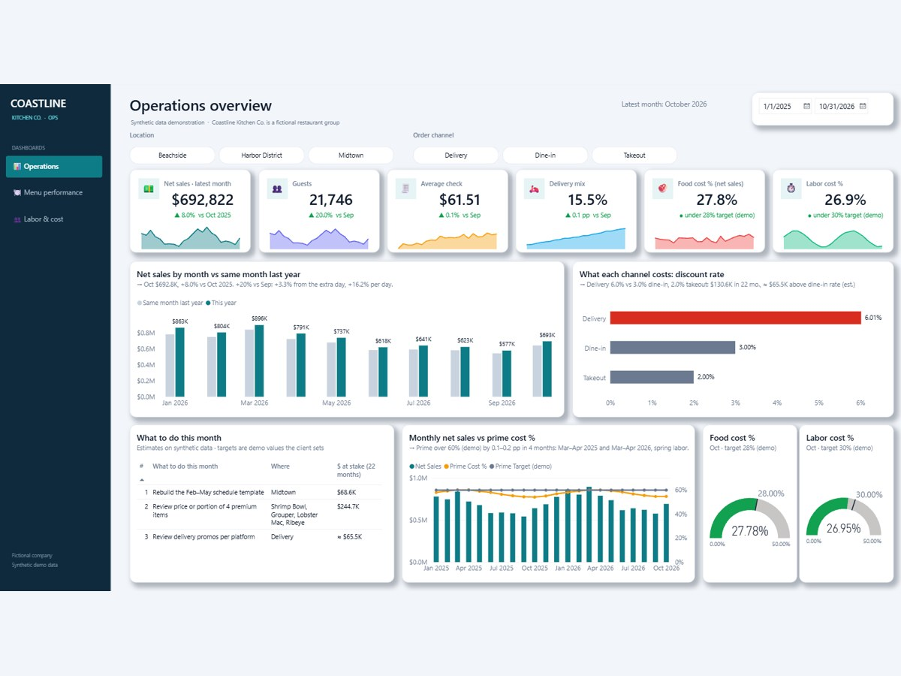
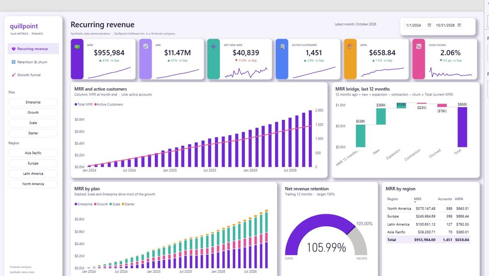
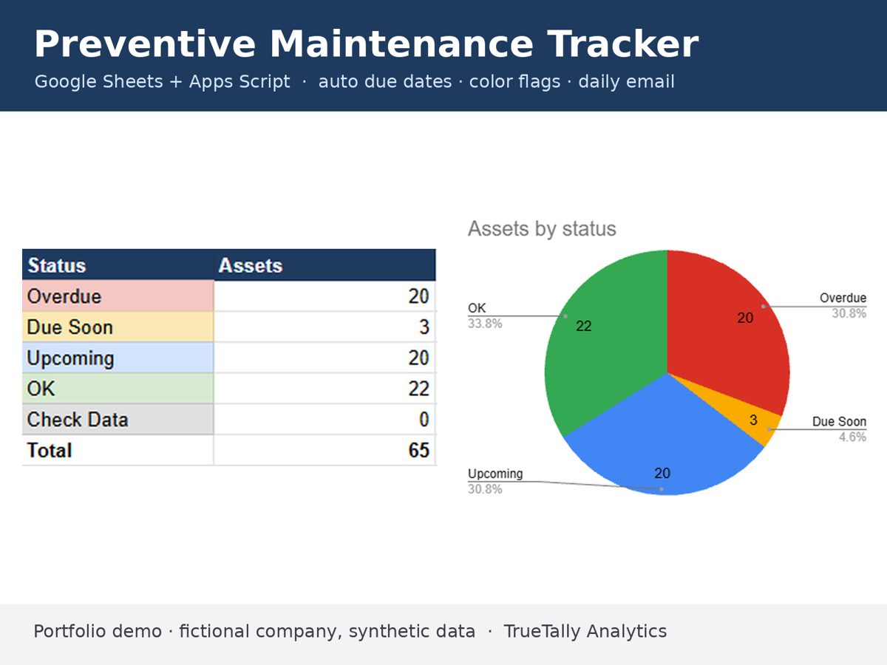
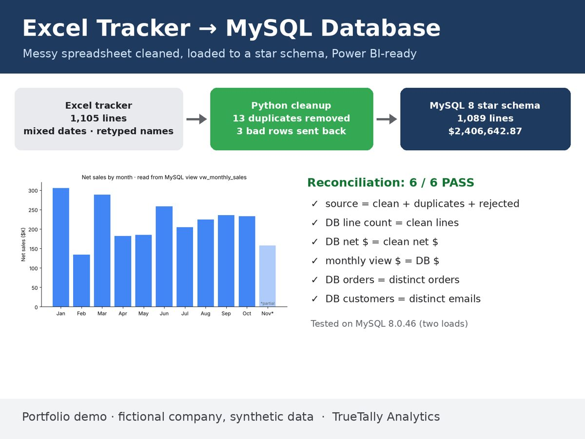
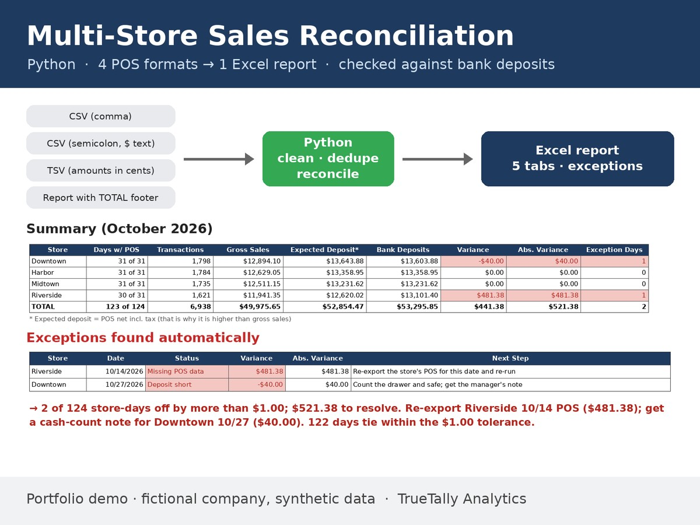

TrueTally Analytics · South Florida, USA
Power BI dashboards, Excel and Google Sheets trackers, and Python/SQL data cleaning for small and mid-size US businesses. Fully async: send your files, get tested results back.
Practical data work for teams that run on spreadsheets and need answers they can trust.
Sales, profitability, budget vs. actual and operations dashboards built from Excel, Shopify, QuickBooks or CSV exports.
KPI dashboards, budgets and trackers with Apps Script automations, scheduled email digests and US-format reporting.
Merge, dedupe and reconcile files from different systems. Optional load into MySQL with Power BI-ready views.
Each project below is a working demo built and tested end to end.
Please note: all portfolio projects use fictional companies and synthetic data created for demonstration. They are not client work, and no client data is shown on this page.

Executive overview with net sales, gross margin, category ranking and regional performance, plus a data-quality page.

Net revenue, MER, blended CAC, revenue by channel, new customers by month and top states.

Variance by account, operating expenses vs. budget and a monthly summary for a home-services business.

Sales by hour and channel, food and labor cost targets, and location comparison.

MRR, ARR, MRR bridge, net revenue retention and revenue by plan and region.

Status logic, live dashboard, one-click service logging and a daily overdue email digest via Apps Script. Covered by 8 automated tests.

Messy workbook cleaned in Python and loaded to a MySQL star schema. 6 of 6 reconciliation checks pass, totals match to the cent.

Four store exports in different formats consolidated and reconciled. Missing days, duplicates and cash variances flagged in a clean Excel report.
Fully async. No calls needed.
Send a message through the freelance platform where you found me, with a sample file and what you need. You'll get a written reply, usually within one business day.